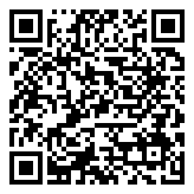

Z
ZEKiQ مدير
v2.0.5 — إصلاح PIN + الطاولات
✓ متصل لكن PIN يقول «تعذّر الاتصال»؟
- اضغط حفظ + 4G مرة أخرى (حتى لو يظهر متصل)
- انتظر «✓ تم — 4G» ثم أدخل PIN
- إن لم ينجح: احذف بيانات التطبيق → أعد
tonino.zekiqmenu.com → حفظ + 4G
🪑 لا تستطيع الدخول للطاولات؟
- التطبيق الحالي يعرض الطاولات لكن لا يفتح التفاصيل عند الضغط
- الحل الفوري (بدون إعادة تثبيت):
🪑 فتح الطاولات الآن (متصفح)
صفحة الطوارئ — 3 خطوات:
- اضغط الزر البنفسجي أعلاه
- أدخل
tonino.zekiqmenu.com + PIN المدير
- اضغط دخول → ثم 🪑 الطاولات → اضغط أي طاولة
📷 QR للطاولات

أو — تطبيق كامل مع الطاولات (يتطلب إعادة تثبيت):
- احذف التطبيق القديم (Kaldır)
- حمّل ToninoOwner-patched.apk أدناه
- Play Protect → Yine de yükleyin
- ستظهر شارة v2.0.5 + زر 🪑 الطاولات
⬇️ ToninoOwner-patched v2.0.5 (PIN + طاولات)
⬇️ ToninoOwner عادي (تثبيت فقط — بدون طاولات)
⚙️ ربط النفق / 4G
ToninoOwner-patched = uninstall ثم install · owner-tables.html = فوري بدون uninstall